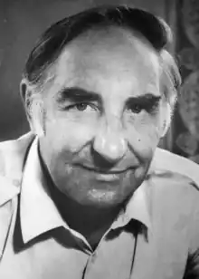

Борис Харчук
(1931 — 1988)
Борис Харчук народився 1931р. в с. Лози на Тернопільщині. Закінчив Полтавський педагогічний інститут (1954) та Вищі літературні курси в Москві. Працював журналістом. І писав. Писав, як веліло серце, як зобов'язувала совість перед тою землею, що його пустила у широкий світ. Тому він ніколи не соромився своїх найперших книжок, не переписував їх. А за три десятиліття многотрудної праці на полицю стала бібліотека томів з його іменем: романів "Волинь" (у чотирьох томах, 1959 — 1965), "Майдан" (1970), "Хліб насущний" (1976), "Кревняки" (1984), повістей і оповідань "Йосип з гроша здачі" (1957), "З роздоріжжя" (1958), "Станція "Настуся" (1965), "Закам'янілий вогонь" (1966), "Зазимки і весни" (1967), "Неслава" (1968), "Горохове чудо" (1969), "Помста" (1970), "Материнська любов" (1972), "Школа" (1979), "Невловиме літо" (1981), "Облава" (1981), "Подорож до зубра" (1986). А ще твори, котрі не могли з'явитися за життя автора і лише тепер приходять до нас: роман "Межі і безмежжя" (написаний 1966p.), повісті "Українські ночі" (1985) та "Мертвий час" (1987), начерки роману "Плач ненародженої душі" (80-ті роки), оповідання й новели. Для Б. Харчука література ніколи не була цінністю самодостатньою — виділяв лише ту, яка допомагає людині залишатися людиною, а народу — народом. Не визнавав ні детективної белетристики, ні поезії задля поезії — справжньою вважав лише літературу, яка виправдовує своє існування в контексті історичної долі народу, а що народ наш заслуговує долі кращої, то й література бачилася йому передовсім як сила історієтворна і націєтворна. Література, на його думку, творить народ. У цій свідомій заангажованості виявляється традиціоналізм Б. Харчука. Одначе висновок щодо традиціоналізму важко потвердити творчістю письменника, якщо, ясна річ, розглядати її як щось цілісне, а не обмежуватися одним чи кількома творами, взятими "задля прикладу". Бо літературний доробок прозаїка не просто великий за обсягом — він ще й навдивовижу розмаїтий, його не зведеш до вичерпної "спільно-знаменникової" характеристики. Так, Б. Харчук — це густонаселені романи "Волинь", "Майдан", "Кревняки", за якими легко вгадується потужна традиція класичної прози другої половини XIX ст. з її епічним диханням, психологічно місткими діалогами й демонстративною відстороненістю автора, який "не втручається", не видає своєї присутності ремарками, коментарями, прямим — через голови героїв — звертанням до читача. Це повість "Палата", що її (як і деякі інші його твори про матір, новели різних літ про "хату") можна б назвати "довженківською". Це численні оповідання й повісті про дітей, герої яких своїми "дорослими" судженнями так часто нагадують усезнаючого, всевидящего, а тому й не по літах сумного Сина Божого на материних руках, якого багатовікова іконописна традиція велить малювати з обличчям майже дорослої людини. Це "стефаниківська" коротка фраза, в якій не опис, а дія, коли така ж наступна фраза незрідка виокремлюється в новий абзац, бо звичайне дієслово означає навіть не конкретну дію, не порух, скажімо, руки, а цілий акт, невидиме дійство, яке звершилося у душі героя. Це "винниченківське" прагнення змалювати людський натовп, охоплений єдиним пориванням, не масою, в якій годі розрізнити окремі обличчя, а спільністю особистостей, де в кожної своя доля в житті, своя мовна партія у гомінкому багатоголоссі. Цей ряд, який мав би потвердити традиційність Харчукової прози, означити її джерелами великих попередників, можна продовжувати... Але до якої традиційної лінії зарахувати "Подорож до зубра"? Жанрове визначення — "дорожні нотатки" — тут таке ж оманливе й довільне, як і в повісті "Світова верба", що названа автором "безсирітською казкою", а оповідь ведеться у незвичній для Харчука манері — від першої особи, до того ж створюється переконлива ілюзія повної ідентичності ліричного "я" і самого письменника. А лаконічні — на одну-дві сторінки — "Босі слова", сюжетні мікроновели, в яких на локальному матеріалі здійснено прорив до розуміння глибинних, ретельно заретушованих і міфологізованих офіціозною демагогією суспільних процесів. А історична повість-легенда "Ой Морозе-Морозенку", чи саркастична повістина "Profundis", в якій прозірливо передбачено кон'юнктурну "перебудову" деяких літературних метрів? Назвати твори лише винятками у "загалом традиційній" прозі Б. Харчука означало б заперечити посутнє й серцевинне в ній, звузити створений письменником світ, так і не наблизившись до розуміння тієї справжньої великої традиції, на грунті якої зросла його проза. Людина — народ — людство. У цьому ряду є ще одна ланка — рід. І Б. Харчук зосереджував на ній увагу щонайпильнішу. Турії в "Кревняках", Гнатюки в епопеї "Волинь", Швайки в повісті "У дорозі", Волянюки в романі "Майдан" — це не просто сім'я, а саме рід, чиє коріння губиться в товщі століть, а стовбур зазнав деформацій, неминучих при історичних катаклізмах і зміні епох. Тут неминучі питання з розряду вічних: що є людина? Що є світ? Звідки прийшли ми і куди йдемо? Колись між цими питаннями й людиною запобіжно, охоронно стояв рід. "Так на роду написано" — адже це не лише про фаталістичну визначеність долі, а й про нерозривний зв'язок особистого з родовим. Людина була обмежена в своїй свободі родовими зв'язками, але почасти й захищена ними. Тема роду, його занепаду й руйнації пронизує всю творчість Б. Харчука. З'являється вона і в одній із останніх повістей — "Онук". З'являється з народженням онука, який прийшов у світ проти волі матері-студентки. Ситуація не нова, про неї неодноразово читали в художній літературі, але письменник мужньо сказав про те, що метастази бездуховності уразили й старше покоління — бабусю, саме ті клітини, які завше були біологічною та моральною основою народного буття, гарантували природний зв'язок поколінь. У цьому зв'язку пригадуються Катерина з роману "Кревняки", батьки головної героїні з повісті "Панкрац і Юдка", які воліють не усвідомлювати, що, по суті, підштовхують свою доньку до морального самогубства. "Князь" Біловезької Пущі ("Подорож до зубра") залишився диким, попри всі спроби приручити, зломивши його природу. Він пережив кілька імперій і королівств, чиї вінценосці знищували зубрів без ліку. Дерево також не може вбити себе. Людина може. Її самогубство починається з заперечення родової пам'яті й моралі. У Б. Харчука звичайнісінька коса, яку о ранковій порі клепле дядько Захар (оповідання "Косарі"), це все-таки коса з історії. З вічності, яка минає, переходячи в минуле. Тому дуже цікавим є припущення М. Слабошпицького, якому здалося, що Харчук прихований патетик, а тому, боячись патетики, як вогню, намагається писати скупими, заземленими, буденними словами, без ніяких "метафоричних хуртовин", без жодних "стилістичних інкрустацій" — "на грані протоколу". Але й непомітне переведення звичайного, "побутового" слова в інший контекст, "високий", де за ним відкривається буттєве, — це теж Харчукове. Б. Харчук належить до письменників, що довіряють читачеві, покладаються на його здатність домалювати й домислити, а тому й уникав нудного розжовування та надокучливих авторських коментарів. При цьому, одначе, не вдавався до езопівської мови — з її натяками, багатозначними образами та свідомо "затемненими", тобто закодованими й зашифрованими думками. Він писав переважно про тих, кому не до книжок: день у день при землі, у виснажливій роботі. Мав свого читача — всіх тих, кому боліло те, що боліло і йому, вірячи в силу слова, своєчасно мовленого й своєчасно почутого. С. Гречанюк Історія української літератури ХХ ст. — Кн. 2. — К.: Либідь, 1998.